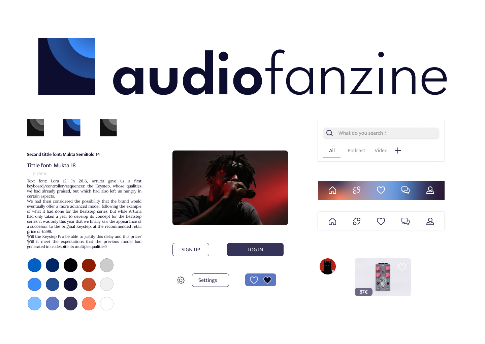
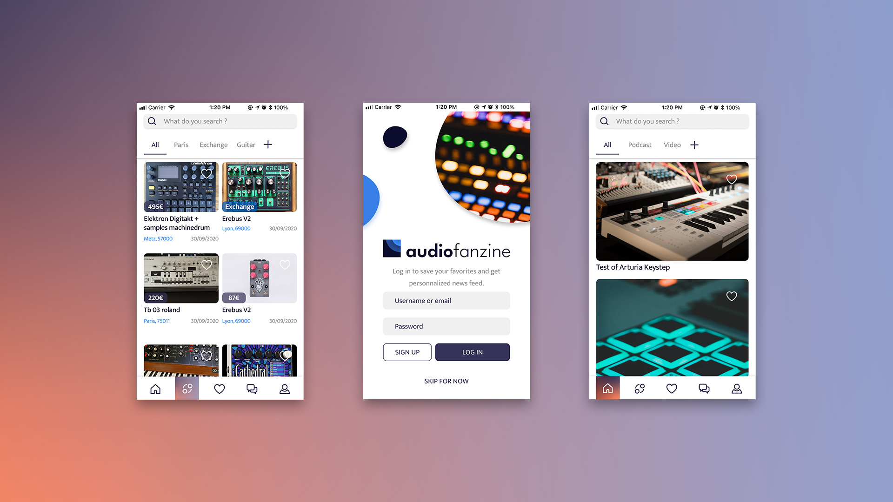

Dans le cadre de ce projet, j'ai entrepris la conception d'une application mobile pour le site de musiciens, Audiofanzine. Bien que le site enregistre septs millions de pages vues par mois, il ne dispose pas d'une application mobile dédiée à la date de ce projet.
Tout d'abord, j'ai inspecté et testé l'interface pour révéler les problèmes actuels.
Un constat immédiat a été la présence de deux versions du site, mobile et bureau, avec des adresses web distinctes. Cependant, toutes les pages ne détectent pas automatiquement le type d'appareil, augmentant ainsi le risque pour les utilisateurs mobiles de se retrouver sur une interface conçue pour le bureau.
Dans la version mobile, j'ai relevé divers problèmes de conception, notamment un manque de cohérence visuelle, tel que l'inconsistance entre les deux panneaux latéraux de menu.
Une analyse plus approfondie aurait impliqué des tests d'arborescence du site et une évaluation des besoins des utilisateurs d'Audiofanzine. Les métriques de "m.audiofanzine" auraient également fourni des indicateurs utiles.
J'ai examiné les interfaces des sites concurrents pour puiser des idées, notamment l'utilisation courante de la barre d'onglets, jugée plus conviviale que la barre de navigation du site mobile d'Audiofanzine.
Pour améliorer l'expérience utilisateur, j'ai formulé trois objectifs principaux :

Des tests d'utilisabilité itératifs ont confirmé les décisions de conception.
La charte graphique inclut un nouveau logo pour refléter l'esthétique renouvelée.
La navigation repose sur une barre d'onglets permettant d'accéder aux différentes sections du site : Actualités, Annonces, Favoris, Messages/Forum, Profil. Dès son ouverture, l'utilisateur peut parcourir le fil d'actualités du site de manière fluide, tout comme les annonces. Il peut également rechercher du contenu spécifique via la barre de recherche, comme des annonces de guitare Stratocaster Fender ou des discussions sur une boîte à rythmes.
Composants Interactifs : Les différents éléments animés ou interactifs apportent des rétroactions visuelles et de la dynamique à l'application.
J'ai ensuite développé un prototype haute-fidélité, intégrant les interactions prévues et le design visuel pour une ressemblance maximale avec le produit final. J’ai par la suite produit un prototype haute-fidélité. C’est-à-dire qui intègre les interactions du futur produit et son design visuel pour une similarité maximale avec celui-ci.
Vous êtes libre d'essayer, de télécharger ou d'utiliser ce prototype :
Merci !